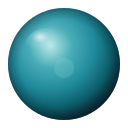
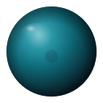
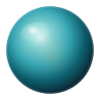

One orb · three materials · no symbols
Same geometry. Three material treatments only. Live site stays wordmark-only until you pick Satin glass, Polished ceramic, or Soft translucent.
No orb deployed. Provisional CR monogram favicon only.
Cool aqua highlight, translucent mid-tones, deep ink rim. Calm spatial-computing glass.

Denser body, matte-leaning highlight, medical-device substance. Premium without chrome.

Pale aqua interior, softer light, tiny optional warm core. Most “alive / ambient.”

See commit listing — all hero orbs are pure SVG (typically under 1 KB).